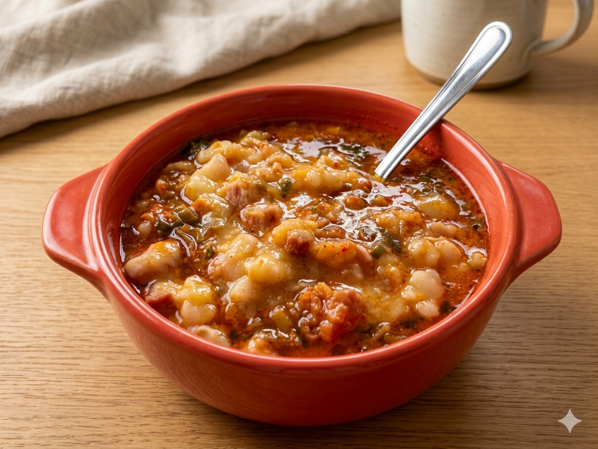
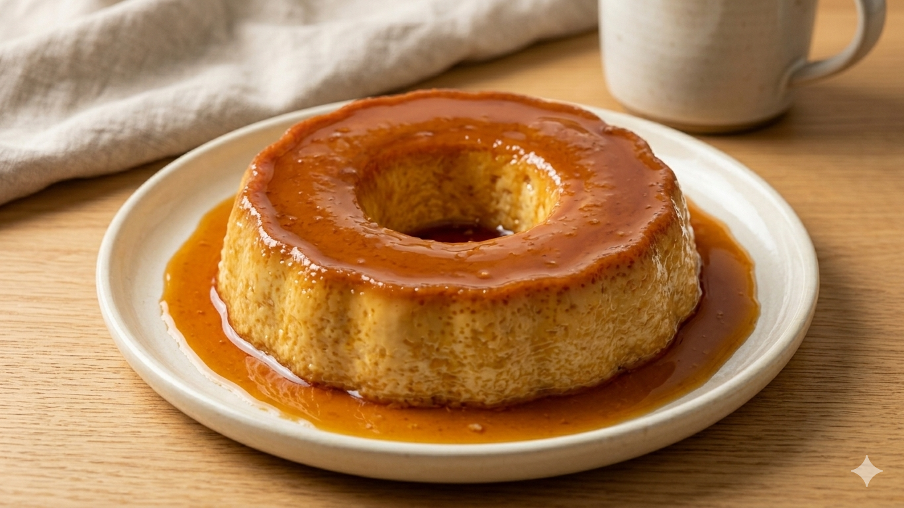

Tarta de jamón y queso
Ideal perfecta para un brunch
Una colección de recetas ricas, abundantes y ¡repletas de amor!
Ideal perfecta para un brunch

Caliente y reconfortante

Deliciosa y saludable

Una deliciosa combinación de sabores

El clásico de la cocina argentina

La infalible con chorizo colorado

El postre clásico de la cocina argentina